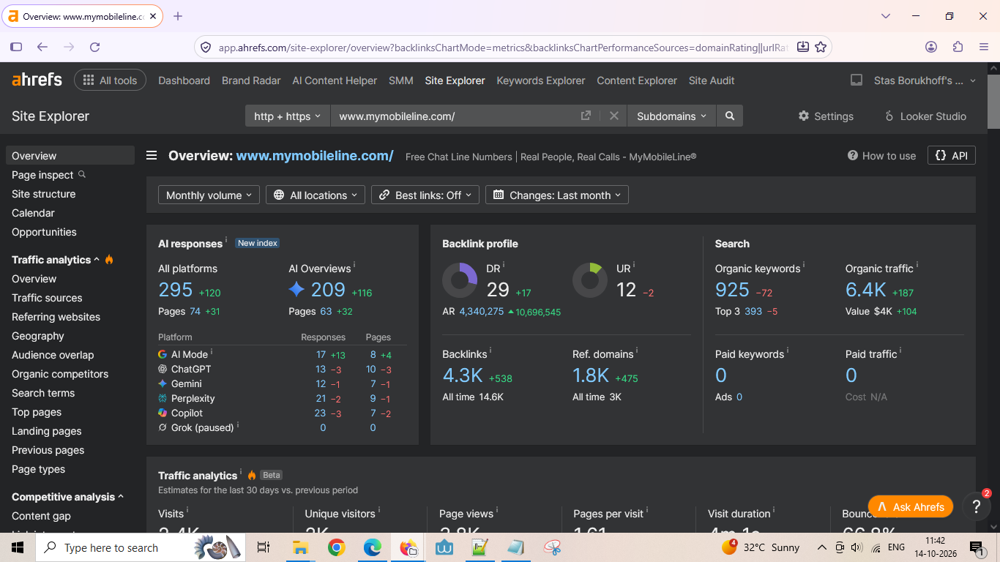
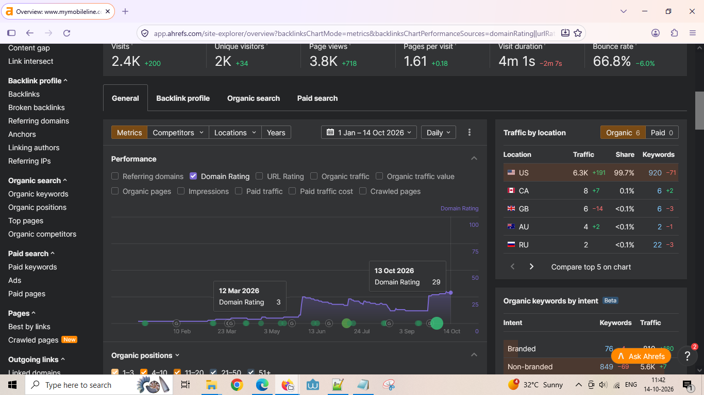

Case Study 02 · Off-page SEO
MyMobileLine.com: Link-profile recovery and organic growth
The link-profile recovery phase of the MyMobileLine.com SEO case study, based on the supplied document describing a 90-day engagement.
Source limitation: This page and the MyMobileLine Google Search Console snapshot describe the same website. The supplied PDF says figures are rounded and representative, with exact client data withheld. Confirm your role and permission to publish before using it in job applications.
Reported results over 90 days
Figures below are transcribed from the supplied case-study document; they are not independently verified in this portfolio.
| Metric | Before | After | Reported change |
|---|---|---|---|
| Domain Rating | ~3 | ~22 | +19 points |
| Referring domains | ~95 | ~290 | ~3× |
| Monthly organic traffic | ~2,700 | ~11,500 | ~4.3× |
| Estimated organic traffic value | ~$1,600/month | ~$6,600/month | ~4× |
Diagnosis described in the source
- Loss of a small number of high-authority domains drove the reported Domain Rating decline.
- Referring-domain counts remained broadly stable through the initial decline.
- Some lost-link alerts were described as low-value or false positives.
Strategy described in the source
- Prioritize niche-relevant, authoritative placements.
- Avoid PBNs, link farms, and indiscriminate directory blasts.
- Strengthen authority to existing city- and service-specific landing pages.
- Focus on link quality and relevance rather than raw volume.
Source: supplied PDF, “From a near-zero Domain Rating to 4x organic traffic in 90 days.” The document states that figures are rounded and representative of the engagement, with exact client data withheld. Confirm that you can accurately represent the engagement and your own contribution before publication.
Updated Ahrefs evidence — 14 October 2026
These screenshots document MyMobileLine's backlink profile, Domain Rating history, and organic search estimates in Ahrefs on 14 October 2026.

Visible metrics include DR 29, UR 12, 4.3K backlinks, 1.8K referring domains, 925 organic keywords, estimated organic traffic of 6.4K, and 393 keywords in the top three. These are Ahrefs estimates captured on the screenshot date, not Google Search Console totals.

The visible chart marks Domain Rating at 3 on 12 March 2026 and 29 on 13 October 2026. The timeline shows the increase in Ahrefs' Domain Rating metric over the displayed period.